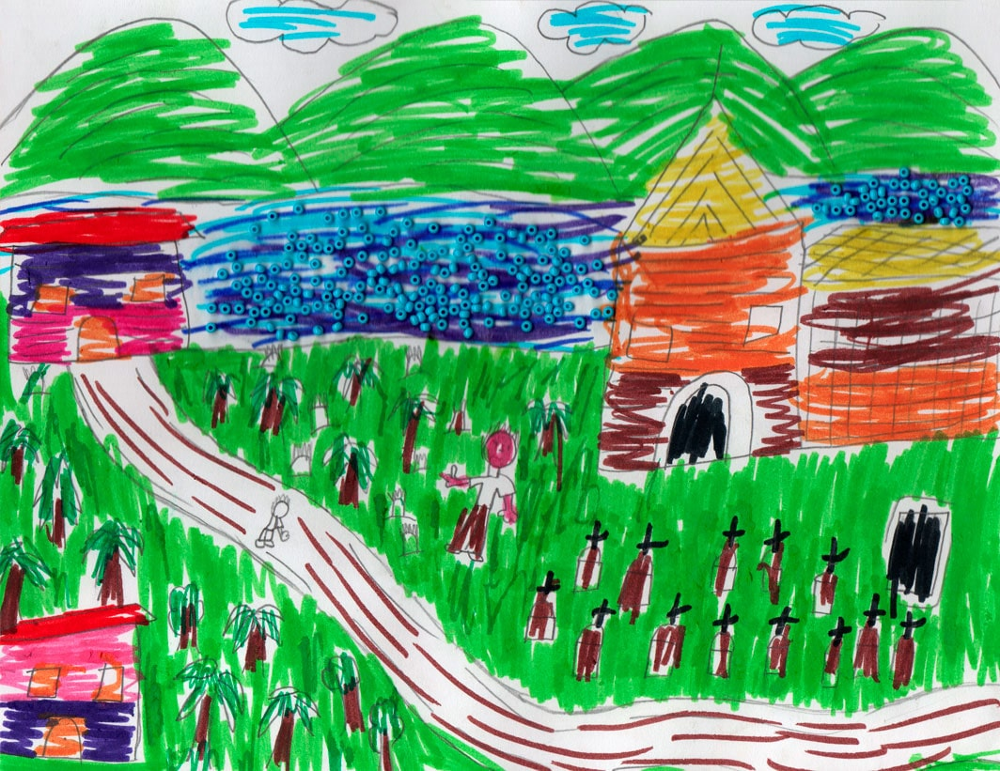
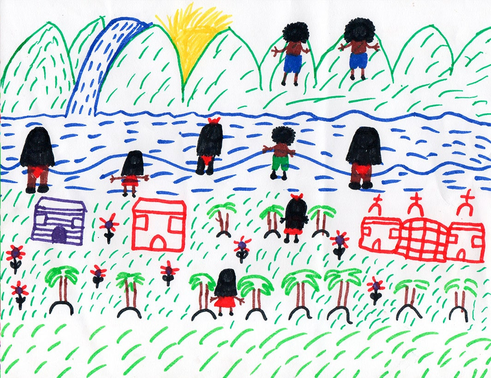
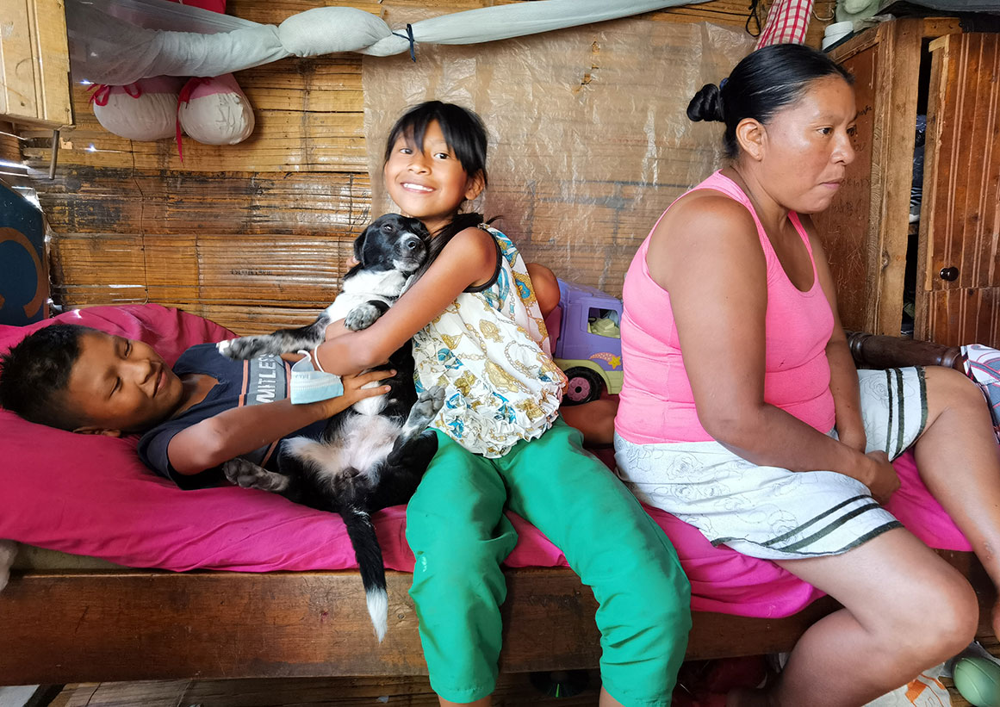
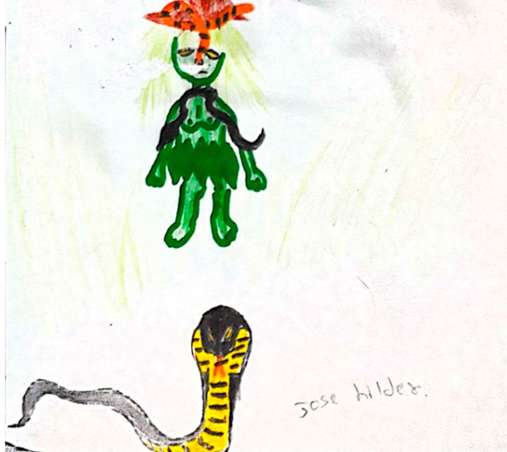
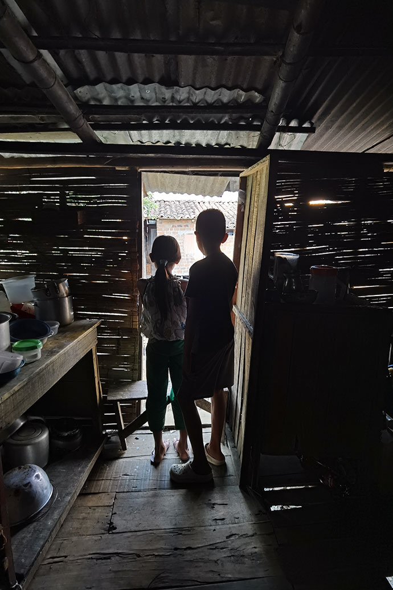
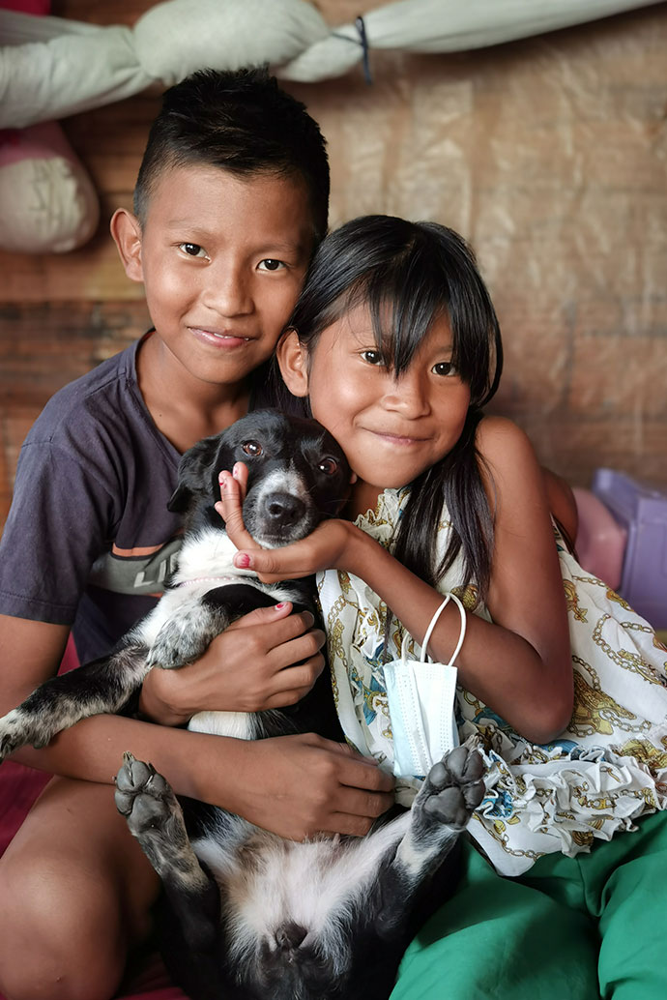
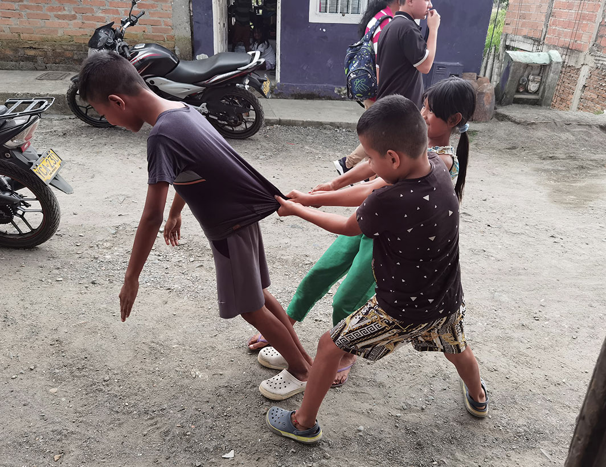
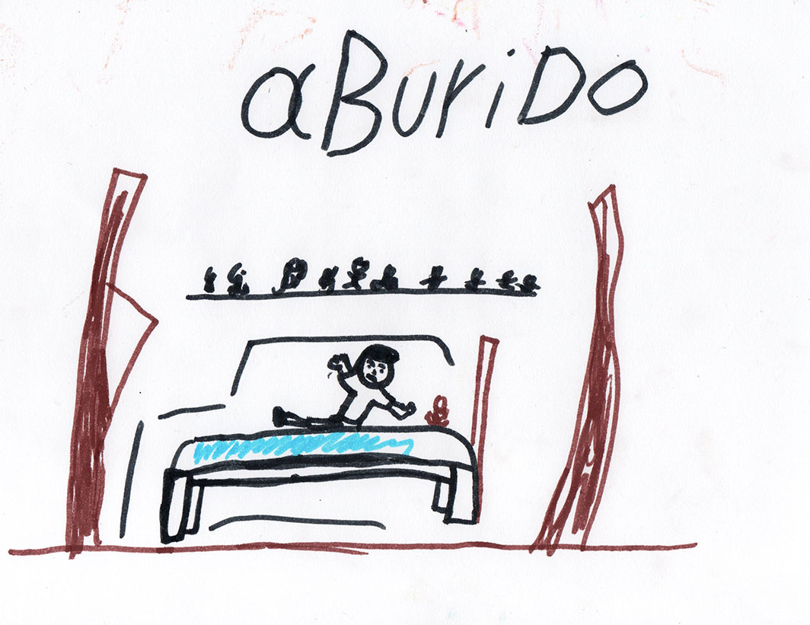

Francia y José Ilder Nayazá, de 10 y 11 años respectivamente, dibujaron su vida cotidiana en la comunidad de Caimalito. Foto: composición realizada por Giovanni Salazar, de Agenda Propia.
Francia y José Ilder Nayazá, de 10 y 11 años respectivamente, dibujaron su vida cotidiana en la comunidad de Caimalito. Foto: composición realizada por Giovanni Salazar, de Agenda Propia.
De la montaña a un río de chaquiras: voces de la niñez Emberá en Risaralda
Francia y José Ilder son dos hermanos de la comunidad Emberá Chamí de Risaralda que por el desplazamiento forzado que vivió su madre hace 12 años deben criarse en Caimalito, uno de los 12 corregimientos de Pereira. Desde allí, los hermanos imaginan lo que era la vida en el resguardo, al tiempo que narran las dificultades a las que se han enfrentado en su barrio.
Por: Daniela Mejía Castaño y Katherine Hernández.Somos pueblo de la vida, somos pueblo de la tierra, somos pueblos en resistencia. Los emberá somos de río, de la montaña, somos hijos de Karagabí quien nos encomendó la tarea de preservar la naturaleza como nuestro más preciado tesoro.
Mandato popular indígena, 2005
José Ilder Nayazá, de 11 años, toma el color negro para repintar las trece cruces sobre las trece lápidas que dibujó con lapiz sobre el papel. El color negro lo utilizará solo para tres cosas: para la puerta de la iglesia, para una tumba en el suelo y para esas trece cruces. El resto de la composición es una explosión de colores vivos y alegres. Azul para la nubes y el río, morado y rosado para las paredes de las casas, rojo para los techos y verde oscuro para las hojas de las matas de plátano.

Representación pintada por José Ilder Nayazá de los recuerdos que ha escuchado de su madre sobre el resguardo en el que nació, el Emberá Chamí Unificado sobre el río San Juan. Del río sobresalen las chaquiras, pequeñas pepitas que usan los Emberá para los tejidos.
En el dibujo el niño plasmó los recuerdos que le ha escuchado a María Lucelly Siágama, su madre, de su tierra, ubicada en la vereda Alto Geté, perteneciente al resguardo indígena Emberá Chamí Unificado sobre el río San Juan, en la profunda cadena montañosa de la cordillera Occidental, hacia el noroccidente del departamento de Risaralda, en Colombia.
Antes de que José Ilder pintara el recuerdo de la tierra de su familia, sentado sobre una cama de madera junto a su hermanita Francia, de 10 años, escuchó atento la historia que le contó su madre de su territorio ancestral: “La finca mía es selva, montaña, la gente vive retirado, no hay caserío, no hay carretera. Mi mamá y mi papá cultivaban maíz, plátano, fríjol, yuca, arracacha y banano. Hay animales de monte, gurre, chucha, eter, bidoe, Îchur, Bí, chigüiro y gallina de monte, muchos animales, y los cazan y les hacen trampa para comerlos, hasta que llegan mucho la guerrilla, deciaba no trabajan acá porque en estos momentos vamos a ubicar acá y usted tiene que ir pal pueblo, y por esa cuestión al papá de Ilder y Francia no lo dejaban trabajar el campo, nosotros como veníamos del chamí llegamos como desplazada acá (sic)”, relata María Lucelly.

Representación del resguardo hecha por la hermana menor de José Ilder: Francia Nayazá. La niña no conoce el territorio ancestral de su familia.
"Acá" es Caimalito, uno de los doce corregimientos rurales de Pereira, la ciudad más poblada del Eje Cafetero según el Departamento Administrativo Nacional de Estadística (DANE), capital del departamento de Risaralda. Para cuando los grupos armados ilegales les hicieron abandonar su tierra Francia aún no había nacido, José Ilder tan solo tenía un año y María Lucelly no sobrepasaba los 25.
Los grupos armados ilegales que hicieron presencia en el municipio de Mistrató, donde se encuentra el resguardo de la familia Nayazá, fueron el Frente 47 de las Fuerzas Armadas Revolucionarias de Colombia (FARC), el Ejército de Liberación Nacional (ELN) y el Ejército Popular de Liberación (EPL), según información suministrada por el investigador e historiador Víctor Zuluaga. En el informe de riesgo N. 032-16 de la Defensoría del Pueblo, publicado en el año 2016, se confirma el protagonismo que tuvieron las FARC y el ELN en los municipios de Pueblo Rico y Mistrató, también la presencia de las Autodefensas Gaitanistas de Colombia (AGC) cuando llegó la minería ilegal a la zona.
En el Plan de vida del pueblo Emberá de Risaralda (2012) se dice que para inicios de los años ochenta el Estado, a través del desaparecido Instituto Colombiano de la Reforma Agraria (Incora), legalizó finalmente tierras que se convirtieron en el resguardo indígena que José Ilder dibuja con gran destreza. Para el pueblo Emberá la pintura está ligada a su concepción de mundo, a través de ella expresan sentimientos y estados de ánimo, se protegen de espíritus malos, se dan aliento e incluso la utilizan para embellecerse y conquistar a sus parejas.
Según el historiador Zuluaga, la tierra de los chamí estaba integrada por “Mistrató, Pueblo Rico y la mitad de Bagadó, en Chocó, según los títulos dados por la corona española. Es decir, dos municipios y medio, era mucha tierra porque eran nómadas, recolectores y cazadores, necesitaban moverse. Pero en 1903 el gobierno del Cauca ordenó rematar su territorio para hacer las vías de acceso de un proyecto nacional fallido, que buscó unir el río San Juan con el río Atrato. Después, debido a la crisis económica de 1930, el gobierno de Caldas permitió que muchos colonos antioqueños fundaran en sus tierras el corregimiento San Antonio del Chamí. En esa misma acta quedó constancia de que se estudiarían las posibles propiedades de los indígenas, sin resultados hasta hoy. Así que para 1976 la comunidad no era dueña de nada, sí, ocupaba parte de la tierra, pero no la poseía; y en el 78 llegó la guerrilla, la excusa perfecta para que el gobierno dijera no me meto ahí”.

La casa de la familia Nayazá Siagama queda en Barrio Nuevo, Caimalito, corregimiento de Pereira. Foto: Daniela Mejía Castaño.
El universo Emberá
En el imaginario de José Ilder su familia vive en Caimalito porque “allá [en el resguardo] todas las frutas estaban muertas, como cuando llega el invierno, y por eso mi papá se vino por acá, y de ahí mi papá se enfermó y en el hospital de La Virginia murió”. En distintas conversaciones con Jorge Arce, médico tradicional de Purembará (Mistrató), se ha entendido que la selva es territorio sagrado, fuente de conocimiento y poder, por tanto, la forma de vida de las personas Emberá está profundamente arraigada a la tierra. Al verse sin suelo y sin comunidad es probable que Constantino Nayazá, el padre de José Ilder y Francia, quien también era un jaibaná, haya muerto de tristeza.

Representación del jaibaná y de los espíritus que lo acompañan, llamados jai, hecha por José Ilder.
“Los jaibaná son los médicos tradicionales de nosotros los emberá, los que curan los achaques que otro jaibaná le manda a uno, esos achaques son espíritus malos, son jai. El jaibaná lo canta con las hojas a uno y se alivia”, explica María Lucelly. “Y si muere por eso y no protegen el corazón se puede convertir en Aribada, que es como un monstruo grande y peludo que lo persigue a uno, como el mohán”, complementa José Ilder. Para la mayoría de las comunidades indígenas la enfermedad tiene una raíz espiritual.
Dentro de las investigaciones y la recopilación oral del historiador Zuluaga, cuando muere un jaibaná se cree que batallaba contra espíritus malos enviados por otro jaibaná. Incluso dentro de los resguardos hay lugares espirituales llamados Jaidé (casa de los espíritus), donde los jaibanas interactúan con estas entidades de la naturaleza a través de pensamientos y cantos. Por lo que si alguien en la comunidad se enferma, lo que el jaibaná hace es llamar a los espíritus de su Jaidé para que lo ayuden a sanar al enfermo. Pero como dice Francia “es mejor no hablar mucho de eso porque nos persigue hasta que muera”.
Después de la muerte de Constantino Nayazá, María Lucelly consiguió una nueva pareja, otro hombre del pueblo Emberá llamado Horacio, agricultor, que la recibió junto con sus dos hijos en esa casita de Caimalito desde donde ella cuenta su historia y la de sus hijos. Alrededor suyo y de su familia se tejen lazos de ayuda comunitaria que la abrigan y acompañan: a José Ilder las vecinas le encargan y compran dibujos, sus amigos pagan para que les marque los cuadernos; Mariela, otra de sus vecinas, llegó justo cuando María Lucelly terminaba de relatar su historia para regalarles caldo de gallina a los niños y fue gracias a la vecina Gisela, que prestó su celular para enviarnos mensajes y acordar nuestro encuentro, que pudimos escuchar las memorias de la familia.
El mito fundacional de los Emberá Chamí está basado en la historia de una madre llamada Dachi Dana que apareció en una playa nombrada Baudó, situada en la desembocadura del río Baudó, en el departamento de Chocó. Esta madre estaba con su hijito, Dachi Okõre, que al ver la playa sola se sintió triste y con la guía de su madre sembró la semilla de un chontaduro, un fruto redondo de color naranja que utilizó para crear otras personas. La semilla creció y se convirtió en una palmera que el niñito cortó en varios pedazos y sembró nuevamente en la playa. Luego, Dachi Okõre gritó tres veces en la parte baja de la playa y de los pedazos de la palmera de chontaduro brotaron los primeros humanos, según la cartilla El camino de la lengua Emberá.
Sin embargo, no hay rastro de esta madre creadora ni de su hijo ni de su simbolismo en el dibujo de José Ilder, que cuando se le pregunta qué es ser Chamí responde, la mayoría de las veces, no sé y otras pocas veces responde, sobre todo cuando su madre está cerca y le ayuda a recordar, que es ser de la montaña. Los Emberá se clasifican como Eyabida, gente de montaña, y Dobidá, gente de río. El pueblo Emberá tiene su propio idioma: el emberá, la tercera lengua indígena más hablada en Colombia, y que hace parte de la subfamilia lingüística de los chocóes, se habla en los departamentos de Risaralda, Antioquia, Chocó, Cauca y Nariño.
Al llegar de las zonas rurales a la ciudad, la familia Nayazá Siágama se unió al cabildo Kurmadó, la organización indígena de Pereira. Según sus directivos, Kur hace alusión a piedra o chaquira y Dó al río, es decir, río de chaquiras, a semejanza de como se le conoce a Pereira: La Perla del Otún. Este nombre también hace alusión a un elemento identitario de las comunidades Emberá de Risaralda: las chaquiras o abalorios, pequeñas formas cilíndricas de vidrio y de muchos colores que se tejen con hilo en formas relacionadas con la naturaleza. Las mujeres llevan collares de chaquiras, los niños utilizan manillas y los hombres grandes pecheras y corbatas para eventos especiales. José Ilder, en cambio, fusiona muy bien el color azul claro de su río con las distintas tonalidades de azules que ofrecen las mostacillas para representar el resguardo de Purembará.
Una vida nueva en la ciudad
En la ciudad muchas de los indígenas desplazados se organizan bajo la figura política del cabildo y según el Plan de Vida del Pueblo Emberá de Risaralda su función es la de representar legalmente a la comunidad, ejercer la autoridad y realizar actividades de acuerdo con su sistema normativo basados en sus usos y costumbres.
Laura Moreno, directora territorial de la Unidad para las Víctimas en Risaralda, reconoce la complejidad del conflicto y el multiculturalismo que lo atraviesa. “hemos venido haciendo procesos de reparación colectiva con los Emberá porque son sujetos de reparación, también acompañamos su retorno, pero para que esto ocurra se necesita de voluntad, que quieran regresar; de seguridad, para que no vuelvan a ocurrir hechos victimizantes y de dignidad, para asegurarles salud y educación, pero como entidad nos guiamos por los conceptos de seguridad que da la Fuerza Pública, que para Risaralda son favorables, sin conflicto armado”.
La funcionaria además explicó que cuando ocurre un desplazamiento forzado de comunidades indígenas se activa una ruta de atención de manera coordinada con los cabildos, esto permite que sean agregadas al Registro Único de Víctimas (RUV). Sin embargo, la familia Nayazá Siágama no ha declarado ni ha solicitado su inscripción en el RUV, María Lucelly asegura que no sabe cómo hacer ese proceso.
En Risaralda, hay un 133.481 víctimas del conflicto armado que declararon y son reconocidas en el marco de la Ley 1448 de 2011, según los datos oficiales publicados en el RUV, con corte del 31 de mayo de 2022.
Además, un gran número de personas desplazadas por el conflicto armado llega a habitar construcciones informales, como Caimalito, de acuerdo con una investigación académica realizada por estudiantes de la Fundación Universitaria del Área Andina. Este corregimiento se fundó entre aguas de ríos, cuando llueve mucho se inunda, entonces la familia Nayazá Siágama no solo carga el lastre de ser desplazada por el conflicto armado, sino también por el clima.
Panorámica del río Cauca desde el puente colgante Bernardo Arango, que comunica a Caimalito con La Virginia. Foto: Katerine Hernández Tusarma.
Según Marinela Ocampo, administradora ambiental y habitante de La Virginia, municipio vecino de Caimalito, estas inundaciones tienen tres dimensiones: “geográfica, ya que este corregimiento, al igual que el municipio vecino de La Virginia, está ubicado en una zona donde antes fluía el río Risaralda, en el Valle del Risaralda, que debido al crecimiento poblacional y desarrollo urbano lo han desviado de su cauce original varias veces; de nivel freático, que por la cantidad de agua subterránea y cercanía del lugar no solo con el río Risaralda sino también con el Cauca, se rebosa fácilmente; y de crisis climática, que por las consecuencias de los gases de efecto invernadero en el clima cambia los periodos de retorno de las inundaciones. Antes eran cada 15 años aproximadamente, hoy son más recurrentes, más severos e inesperados”.

Francia y José Ilder en la cocina de su casa mientras miran hacia el patio, en la parte baja. Su casa es alta y se sostiene sobre guaduas que algunas veces evitan que se inunde. Foto: Daniela Mejía Castaño.
En 2020 hubo 30,7 millones de desplazamientos internos por desastres naturales en más de 140 países, tres veces la cifra de desplazamientos por conflicto y violencia en el mundo, según la Agencia de la ONU para los Refugiados (ACNUR). En Colombia quien atiende estos casos es el Sistema Nacional para la Gestión del Riesgo y no reconoce a los afectados por la crisis climática como desplazados sino como damnificados. El gobierno local en Risaralda no lleva la cuenta de cuántos hay en el departamento, pero José Ilder sí recuerda muy bien lo que perdió la última vez que el agua se le entró a la casa: “a Pirata, la perrita, se le inundó la cama, y su alimento pues no está, se perdió, y como el baño estaba en el patio nos quedamos sin baño porque el agua estaba muy sucia”.
La fuerza de la ternura
“La palabra que más me gusta del emberá es padachuma chibía, que quiere decir: plátano. Está rico”, dice Francia sonriente. “Ella solita hace sus tareas, otras veces le ayudo yo, que entiendo casi todo en el colegio, y cuando no, le pregunto a la profesora”, agrega José Ilder. Para su mamá la mayor dificultad en la educación de los niños pasa por el lenguaje: “en el colegio hablan solo español, duro”.
Luz Mery Bañol es la secretaria general del cabildo Kurmadó y la etnoeducadora indígena de la institución educativa Gabriel Trujillo, conoce a José Ilder y ha trabajado con Francia, tiene 26 años de experiencia e imparte saberes culturales, técnicos y tecnológicos desde el acervo cultural indígena con un objetivo: inclusión académica. “En Pereira hay 1.100 estudiantes indígenas para tres etnoeducadores que hay en toda la ciudad. El apoyo es bajo y lo más complejo sí es el idioma. A pesar de eso, nuestros estudiantes tienen grandes fortalezas. En el caso de los padres de Francia y José Ilder, que son muy buenos padres, no están escolarizados. En casa ni siquiera hay energía sino velas y aún así los niños se destacan como excelentes estudiantes en el copiado, en la parte gráfica, visual, con el dibujo, los colores y también la matemática”.

José Ilder junto a Francia, su hermana menor, y Pirata, el nombre con el que cariñosamente llaman a Kira, la perrita de Francia. Foto: Daniela Mejía Castaño.
La Corporación Oshún es una entidad que busca generar propuestas educativas desde la interculturalidad y ha atendido a la niñez de Caimalito —entre ellos a Francia y a José Ilder— con programas de voluntariado que buscan llenar los vacíos académicos a los que se enfrentan los estudiantes del barrio.
“Francia es muy sociable, de mucho compañerismo, pero algunas veces debíamos recordarle que es necesario calmarse y no gritar. José se esmera en hacer las cosas por todos, así que lo que él hacía debía de resaltar, era lindo guiarlo para ayudarlo a pensar en los demás”, recuerda la psicóloga Valeria Salazar, voluntaria de Oshún. Sin embargo, y como lo expresaron otras integrantes de la Corporación, cuando niños bilingües llegan a la ciudad el sistema educativo y todo su entorno está demasiado preocupado porque aprendan el idioma español y se abandonan otros temas igual o más importantes, como el acompañamiento psicosocial: el que aprendan a entender y regular el lenguaje de sus emociones después de un desplazamiento forzado, por ejemplo.
Francia y José Ilder junto a sus amigos del barrio. Francia es mucho más sociable que José Ilder y se amaña mucho más en su barrio. Fotos: Daniela Mejía Castaño.
“Si los niños no son acompañados en su proceso de adaptación y convivencia será más difícil para ellos convivir en ese nuevo lugar. Serán ellos, solitos, enfrentados al mundo”, complementa la psicóloga Valeria. Aún así, Francia y José Ilder se adaptan muy bien: lo hacen muy bien: “José es un artista, se apoya en el dibujo, y Francia es una niña que debemos seguir apoyando para que fortalezca su liderazgo”, dice con una sonrisa Vanessa Salazar, otra líder social y voluntaria de la Corporación Oshún que ha interactuado con los hermanos y su familia.

Francia juega frente a su casa y junto con su hermano y un vecino a hacer un "Michael Jackson", buscan replicar la inclinación famosa del cantante norteamericano. Foto: Daniela Mejía Castaño.
En el mundo de Francia y José Ilder queda la fuerza de la añoranza y la imaginación, la verdad y su inocencia. A menudo María Lucelly utiliza palabras en Emberá para hablar sobre la historia de la tierra de sus ancestros. La familia no olvida. Los niños tejen memoria en la viva voz de su madre. “Si Dios quiere cuando sea grande vamos a ir a visitar. A veces pienso mucho en regresar. En la comunidad se mantienen alegres, se hace fiesta y por la noche se vuelve silencio; por el día pescan, se van al río, se bañan, buscan oro, todo es contento por allá”, dice José Ilder.

"Casi no me gusta salir, prefiero quedarme en la casa. Algunos amigos son muy bruscos y groseros y mi mamá no me enseñó a ser así", José Ilder.
A veces, cuando llueve y hace sol al mismo tiempo, Francia le dice a su madre “¡mami, hay un arcoiris!”, otra veces María Lucelly se pone a cocer la ropa propia de la cultura del pueblo Emberá, hace mazamorra, cocina plátano maduro y hace jugo de panela con limonada. Otras veces se aburre de comer carne y pollo y se va al cañal a buscar pringamosa, ortiga. Entonces, se escuchan las risas de sus niños que le ayudan a buscar la plantita porque sus ojos no ven. Cuando han recogido suficiente pringamosa, cuenta la madre, la lleva en estopa y “echo poquito de frijol, echo huesito y con eso cocino para la familia mía”. “Eso es lo que la pone triste a veces —explica José Ilder— que por aquí no hay la comida que ella tenía por allá”.
Nota. Esta historia hace parte de la serie periodística Dibujando mi realidad, #NiñezIndígena en América Latina, cocreada con niños, niñas, periodistas y comunicadores indígenas y no indígenas de la Red Tejiendo Historias (Rede Tecendo Histórias), bajo la coordinación editorial del medio independiente Agenda Propia.